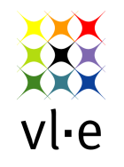

|
|
| About HAMMER |

| |
HAMMER was developed by SP 2.5 Virtual Laboratory and System Integration within the VL-e project at the University of Amsterdam.
Product information
| Product Version: | 0.5 (build: 200706/alpha release) |
| Java Version: | 1.5.0_04 |
VL-e project
|  |
The Dutch VL-e project (Virtual Laboratory for e-Science) is a multi-disciplinary virtual laboratory environment for remote experiment control and Grid-based distributed analysis in experimental sciences. The aim of this project is to bridge the gap between the technology push of the high performance networking and the Grid and the application pull of a wide range of scientific experimental applications. It provides generic functionalities that support a wide class of specific e-Science application environments and sets up an experimental infrastructure for the evaluation of the scientific research. Hammer is part of these generic funtionalities. |
Contact address
A. Belloum (SP Leader)
University of Amsterdam
Kruislaan 403
1098 SJ Amsterdam
telephone: 020 525 7514
e-mail: adam *AT* science DOT uva DOT nl
Links to other related projects
Protege
The Protégé Ontology Editor and Knowledge Acquisition System
OWL-S/UDDI Matchmaker
The Project's home page
All product names mentioned herein are trademarks of their respective owners.
Kruislaan 403
1098 SJ, Amsterdam